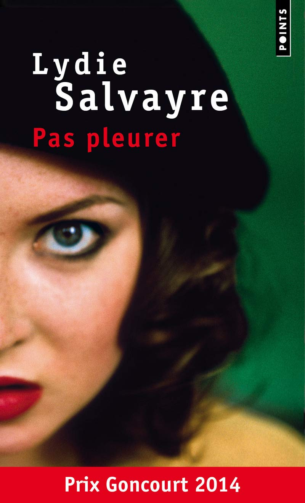

Au bonheur des morts — Viniane Despret
Un essai intéressant et inhabituel, dans un champ très peu exploré

Au bonheur des morts est un essai de la philosophe Vinciane Despret, paru en 2015 sous-titré Récits de ceux qui restent. Il demande comment les vivants s’occupent des morts, et ce que les morts attendent des vivants. C’est un livre compliqué à lire. Il est dense, il avance par détours, et il m’a demandé un vrai effort. Il m’a pourtant touché, surtout par sa fin.
La démarche
Despret ne part pas d’une théorie. Pendant un an, elle s’est contrainte à écouter les conseils avisés qu’elle recevait et à recueillir des histoires de gens en rapport avec leurs morts. Elle écrit : « Je m’attache à suivre les choses telles qu’elles se présentent », en espérant apprendre de leurs « connivences » et de leurs « frictions ». Il faut partir du milieu et suivre tous les êtres à partir de là. Les histoires récoltées sont bien construites, bien formées, et cela révèle une intelligence particulière des événements : les gens savent raconter ce qui leur arrive, même quand cela dépasse la raison.
Le livre entremêle deux récits. L’un est une enquête biographique, plus poétique, sur un événement qui touche sa propre famille. L’autre est une réflexion philosophique. Les deux se répondent tout du long, et c’est ce qui rend la lecture à la fois riche et déroutante.
Prendre soin des morts
L’idée centrale vient de Bruno Latour : toute existence doit être « instaurée ». Si on ne prend pas soin des morts, ils «…
Continuer à lire
8 novembre 2026
Écrire — Marguerite Duras
Étrange, long et bien à la fois
 Écrire
Écrire est un recueil de cinq textes très courts, où Duras revient sur son rapport à l’écriture, à la mort et à la mémoire. J’en ressors avec un avis partagé : deux textes que j’ai aimés, un qui m’a perdu, un qui m’a laissé indifférent, et un dernier que je n’ai pas compris.
Écrire
Le texte qui donne son titre au recueil est une exploration d’elle-même et de son rapport à l’écriture, dans une sorte d'autobiographique. Elle revient sur sa maison de Neauphle et parle du silence, de cet isolement que produit l’écriture et qui lui sert. « Écrire, c’est aussi ne pas parler. C’est se taire. C’est hurler sans bruit. » Elle dit aussi la difficulté d’écrire : « un état de douleur sans souffrance ». L’écriture est simple et facile à comprendre, et pourtant on garde un étrange sentiment à la lecture. Dans cette solitude qui l'étrangle, elle devient folle : elle regarde une mouche mourir, longuement, se demandant d’où viendra la mort, de quel côté, sans jamais l'aider. Il y a quelque chose d'absurde dans ce texte qui charme, mais qui ne parvient pas à me porter. « On écrit à regarder une mouche mourir. On a le droit de le faire. »
En fait, il n’y a pas grand-chose à retenir de ces quarante pages. On a l’impression d’un assemblage de mots, les uns à la suite des autres, et j’y vois davantage une tentative de décrire l’acte d’écrire que l’envie de raconter une histoire (à moins que ce ne soit…
Continuer à lire
8 novembre 2026
Pas pleurer — Lydie Salvayre
Un véritable coup de coeur

Pas pleurer est un roman de Lydie Salvayre, paru au Seuil en 2014 et couronné du prix Goncourt la même année. Il parle de la guerre, de la révolution, de la mémoire et de la violence, sans jamais perdre de vue les gens qui les traversent. C’est un livre étrange, parfois déstabilisant, souvent drôle, et douloureux. Il mêle la grande Histoire et les petites histoires, l’érudition et la parole populaire, la tragédie et le rire, parfois dans la même phrase. Je le trouve très bon, mais aussi très malaisant (j’y reviens à la fin).Les personnages sont sa grande force, les petits détails de son écriture aussi.
Contexte
Le roman repose sur deux récits qui ne se croisent jamais, mais qui se répondent sans cesse. Le premier est celui de Bernanos. En 1936, il assiste aux exactions des franquistes et aux rafles de socialistes. Avec ses convictions de départ, il aurait pu se sentir proche de ceux qui les commettent, et c’est avec effroi qu’il découvre leur violence. Dans Les Grands Cimetières sous la lune, dont Salvayre reprend des passages, il dénonce les crimes commis au nom de la foi et de l’ordre. Son témoignage est le contrepoint historique du récit de Montse.
Le second est celui de Montse, la mère de la narratrice. Sa mémoire s’est altérée avec le temps, et elle ne se souvient plus que de deux périodes : l’été 1936 et l’hiver 1937. Le reste a disparu, mais ces quelques souvenirs…
Continuer à lire
8 novembre 2026